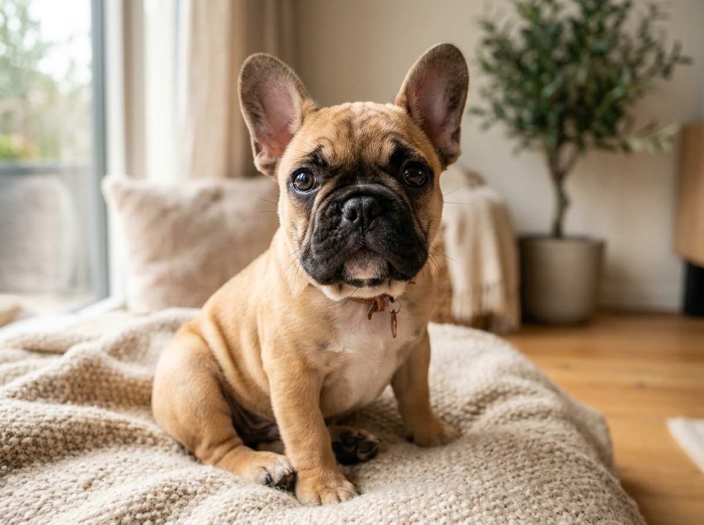

The first 30 days are when routines harden. This guide replaces frustration with biological predictability, solving house-training delays, needle-sharp arousal biting, and puppy blues.

SECTION 2.1•FOCUS: House Training•5 min read
The Biological Window: Potty Mastery
The Situation
Your puppy eliminates outside, walks back in, and deposits a puddle on the living room rug 3 minutes later.
The Science & Mechanics
Puppies lack complete urinary sphincter muscle control before 16 weeks. Movement, waking, and eating trigger the gastrocolic reflex within 10-20 minutes.
Action Protocol
The Bladder Formula: Age in Months + 1 = Maximum Holding Time in Hours (e.g. 2 months = 3h max while asleep; active intervals are 30-45m).
The 3 Biological Triggers: Take the dog outside immediately upon waking, 10-15m post-meal, and after 10m of physical play.
The 2-Second Pay Window: Deliver high-value meat reward within 1 to 2 seconds of squat completion while still outdoors.
Enzymatic Cleanup: Clean accidents with enzymatic bio-cleaners to destroy uric acid crystals (never use ammonia).
SECTION 2.2•FOCUS: Play & Biting•4 min read
The Reverse Timeout: Arousal Biting
The Situation
During evening playtime, the puppy clamps down on hands, jeans, or ankles, biting harder when pushed away.
The Science & Mechanics
Pushing, squealing, and wrestling stimulate predatory play drive. Human reaction functions as an active reinforcer.
Action Protocol
The 3-Second Disengagement: The instant teeth touch skin, say a neutral marker ('Too bad') in a flat voice.
The Reverse Timeout (RTO): Stand up, cross arms, step over the baby gate or leave the room for exactly 15 seconds.
Calm Re-entry: Return without speaking. Offer a tactile replacement (frozen KONG, yak chew, or rope toy).
Rule: Teeth on human = social attention instantly terminates.
SECTION 2.3•FOCUS: Mindset & Routine•4 min read
Decompressing Owner Overwhelm & 3-3-3 Rule
The Situation
At day 5, the owner feels profound exhaustion, crying spells, and deep anxiety over having made a mistake.
The Science & Mechanics
Sleep deprivation and vigilance elevate human cortisol, while the canine cortisol reset curve requires 72+ hours post-rehoming.
Action Protocol
The 3-3-3 Milestone Filter: Day 3 (Overwhelmed/Shut-down) -> Week 3 (Learning routine) -> Month 3 (Attachment & true personality).
Enforced Nap Cadence: 1 hour awake -> 2 hours quiet rest in the Base Zone. Puppies require 18-20 hours of daily sleep.
Radical Simplification: Drop complex obedience tricks. Focus solely on sleep, potty timing, and calm supervision.
Completed Guide 2?
Your foundation is active. Continue to Guide 3: The Empathy Engine (Canine Body Language & Clinical Observation)